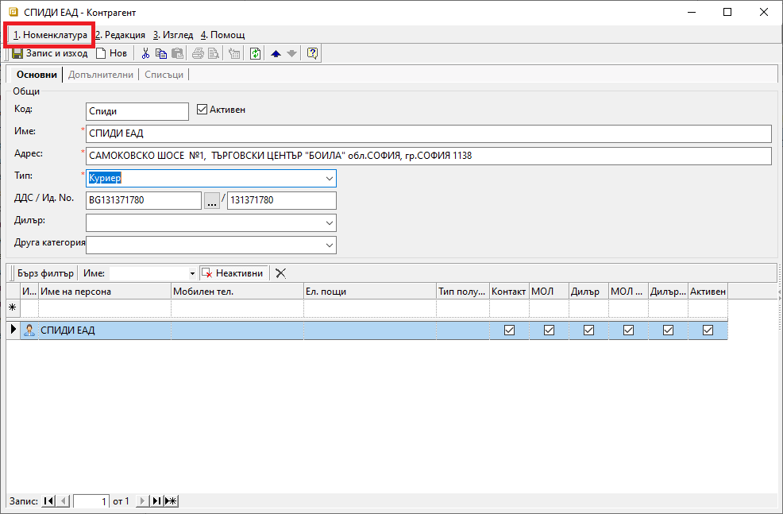
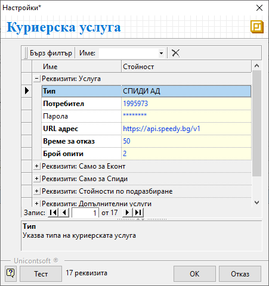
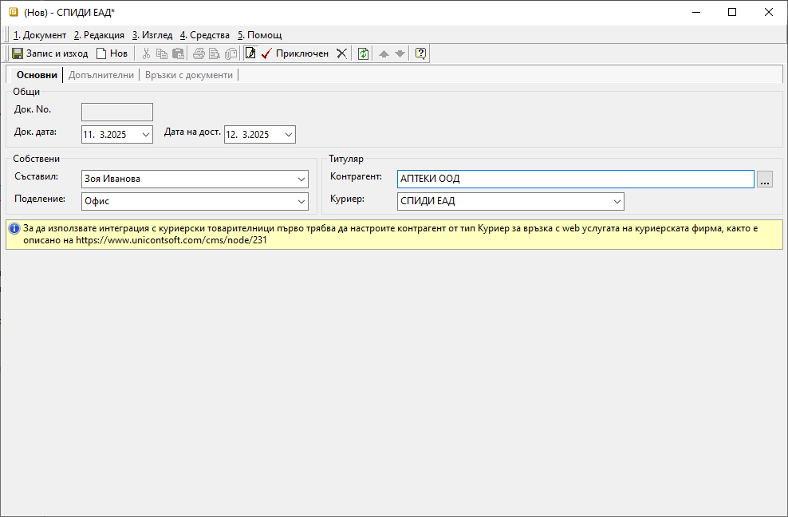
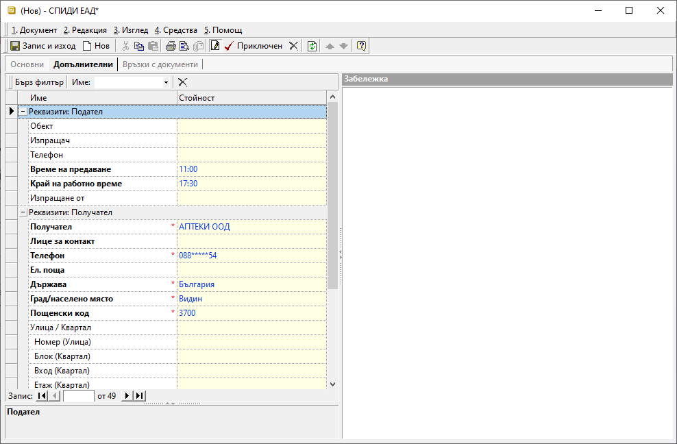

2.2.1.10. Куриерски товарителници#
Системата разполага с инструмент за генерация на куриерски товарителници. За да работи коректно тази функционалност, са необходими предварителни настройки, които се конфигурират еднократно.
При интеграция с куриерска услуга се осигурява бърза генерация на товарителници, като системата автоматично попълва необходимите данни в документа. За целта предварително се дефинират стойности по подразбиране - данни за изпращача, опции за преглед, тест, отказ и други. Системата позволява последваща промяна на тези данни в товарителницата.
Процесът по създаване на товарителница е следният:
От Номенклатури || Контрагенти еднократно се въвежда нова номенклатура за куриерска фирма.
За тип на контрагента трябва да бъде избран Куриер.

Във формата за редакция на избрания куриер от меню Номенклатура се отваря форма Настройки на куриерска услугa.
Попълват се съответните реквизити за интеграция с web услугата на куриерската фирма.
В тази форма могат да бъдат дефинирани и стойности по подразбиране, свързани с данни за изпращача, опции за преглед, тест, отказ и други. Системата ги прилага при генерация на товарителници, като при необходимост данните могат да бъдат коригирани.

От Търговска система || Куриерски товарителници чрез десен бутон на мишката върху списъка с документи се избира Нов документ. Отваря се празна форма за въвеждане на данни.
В раздел Основни се попълват:
Док. No - полето ще се попълни автоматично с номер при валидиране на товарителницата;
Док. дата - в полето се избира дата, за която се генерира текущата товарителница;
Дата на дост. - в полето се избира дата, на която да се осъществи доставката от куриер;
Съставил - в полето се отваря падащ списък за избор от предварително настроените служители;
Поделение - в полето се отваря падащ списък за избор на поделение от предварително настроените в Потребител на продукта;
Контрагент — в полето се избира клиент, като се отваря форма за избор Контрагенти;
Ако търсеният контрагент не фигурира в съществуващия списък, системата позволява въвеждането му в момента чрез десен бутон и Нов контрагент.Куриер - поле за избор на куриер от предварително настроения в Контрагенти списък;

От раздел Допълнителни могат да се попълнят:
Реквизити: Подател:
Обект - в полето се посочва обект, от който куриерът събира подготвената за изпращане пратка;
Изпращач - посочва се лице за контакт;
Ако полето остане празно, системата подава данните от поле Съставил в раздел Основни.Телефон - в полето се попълва телефон на подателя;
Ако полето остане празно, системата подава данните, настроени за персоната в поле Съставил.Време за предаване - от падащия списък се избира час, в който изпращачът желае пратката да бъде взета от куриера;
Край на работно време - от списъка се посочва краят на работното време за обекта-изпращач;
Изпращане от - полето се попълва, когато пратката се изпраща от офис на куриерската фирма;
Реквизити: Получател:
Получател - полето съдържа контрагента, за когото е адресирана пратката;
Лице за контакт - в полето се попълват имената на получателя;
Полето се обзавежда автоматично с настроената персона за избрания контрагент.Телефон - попълва се телефонен номер за контакт с получателя (вкл. за SMS известия);
Ел. поща - в полето може да се попълни ел. поща за контакт с получателя; ;
Държава - от падащия списък се избира държава за доставка;
Грда/ населено място - в полето се избира град за доставка;
Пощенски код - полето се обзавежда автоматично с пощ. код на избрания за доставка град;
Улица / Квартал, Номер, Блок, Вход, Етаж, Апартамент - в тези полета се попълват всички детайли за адреса на доставка;
Пояснение - в това поле може да се въведе разясняващ текст, свързан с доставката;
До поискване от - в полето може да се избере офис на куриер, в който да се остави пратката, когато е до поискване от получателя;

Реквизити: Информация:
Вид услуга - в полето се посочва вид на услугата, която се използва за доставка на текущата пратка;
Услуга - в полето се избира услуга на куриера, която се използва за изпращане на текущата пратка;
За сметка на - от полето се посочва кой следва да заплати куриерската такса по доставка на пратката;
Ценова листа - от падащия списък в полето се избира по чия ценова листа се изчислява стойността на куриерската услуга;
Съдържание - в полето се посочва какво съдържа пратката;
Пакетиране - описание на вида, в който е опакована пратката;
По подразбиране се обзавежда с Пакет.Брой колети - от бутон […] в полето се отваря форма за въвеждане на брой и размери на колетите;
Бруто тегло - кг - в полето се въвежда бруто тегло на пратката (вкл. опаковката);
Референция - в полето може да се въведе текст, който да се отпечата на товарителницата;
Допълнителни услуги:
Фиксирано време - от полето може да се избере точен час, в който куриер да извърши доставката на адрес;
Сума наложен платеж - когато се дължи наложен платеж, в полето се попълва неговата стойност;
Сума застраховка - в полето може да се попълни сума на застрахователна стойност (обявена стойност);
Обратна разписка - в полето се посочва дали към пратката има обратна разписка;
Обратни документи - в полето се посочва дали към пратката има документи за обратна доставка;
Съботен разнос - в полето се избира дали пратката да бъде включена в съботен разнос на куриера;
Чупливо - с Да/ Не настройка в полето се посочва дали пратката е с чупливо съдържание;
Документи - в полето се избира дали пратката съдържа единствено документи;
Отвори преди плащане - в полето се избира дали се допуска преглед на пратката преди плащане;
Тествай преди плащане - в полето се избира дали е позволено тестване преди плащане на пратката;
Пощенски паричен превод - чрез Да/ Не настройка в полето се посочва дали плащането ще се извърши като ППП;
Клиентска фактура по ППП - попълват се номер и дата на клиентска фактура, които се подават на куриера при плащане с договор за ППП;
Ваучери за връщане - чрез опциите Да/ Не в полето се посочва дали да се генерира ваучер за връщане на стока;
Втори телефон за SMS известяване - в полето се попълва телефонен номер на подателя, когато се активира углугата за SMS известяване при успешно доставена на получател пратка;
Реквизити: При отказ от плащане:
Услуга за връщане - в полето се избира вид услуга, която куриерската фирма извършва при връщане на отказана пратка;
За сметка на - в полето се посочва за чия сметка е куриерската услуга по връщане на отказана пратка;
Реквизити: Обратна пратка:
Услуга за обратна пратка - в полето се избира вид услуга, която куриерската фирма извършва за обратната пратка;
Брой колети - брой колети на обратната пратка;
Реквизити: Тотали:
Обща стойност с ДДС - полето показва тотал с дължимата на куриера сума;
Приключен - бутон в лентата с инструменти, който валидира документа. По този начин системата се свързва с web услугата на куриерската фирма и получава пореден номер на товарителницата.
Чрез бутон Запис и изход от лентата с инструменти документът се записва и формата се затваря.